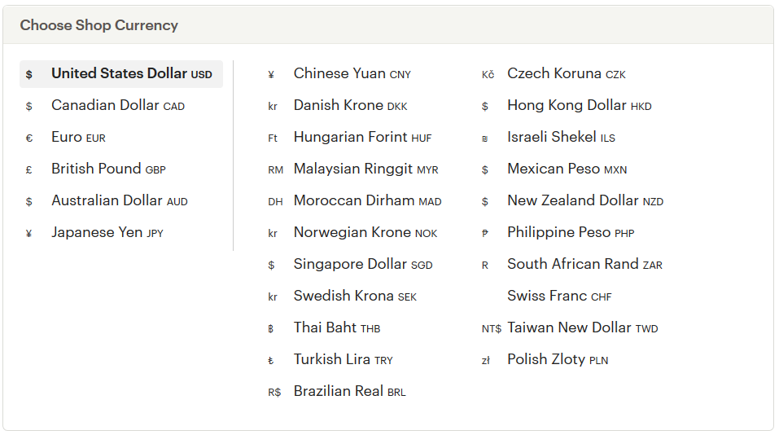
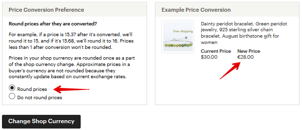
В пункте Price Conversion Preference отметьте, нужно ли округлять ваши текущие
цены до целых значений.
После выбора нужной валюты, нажмите кнопку Change Shop Currency.
В течение часа Etsy сконвертирует ваши цены в выбранную валюту.
Обратите внимание, что ранее созданные купоны по типу «закажи на N тугри-
ков – и получи скидку» больше не будут действовать. Их нужно создать заново.
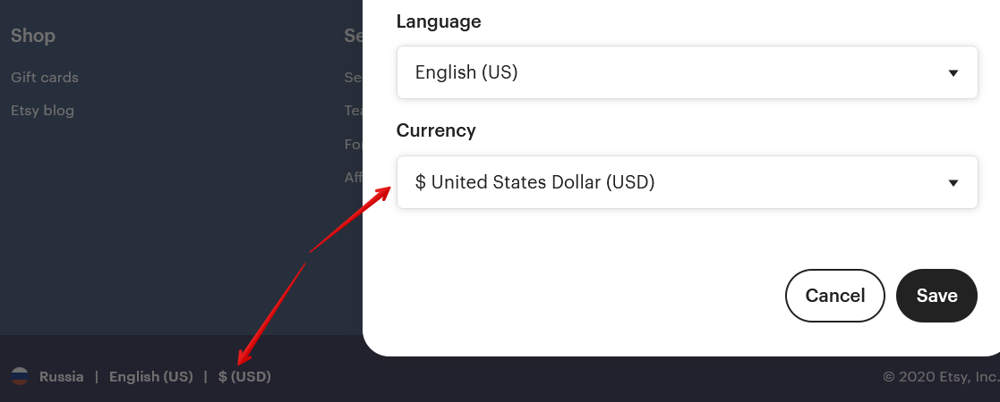
Как округлять цены для покупателей из других стран
На Этси есть покупатели из разных стран. И они могут выбрать в настройках
сайта валюту, в которой им удобно смотреть цены товаров.
В итоге может получиться так, что в долларах изделие стоит ровно $100, а в
британских фунтах стерлингов это будет £78.68.
Etsy могут сделать из такой цифры более «красивую» - например, £79.00.
Чтобы включить такую настройку, перейдите в Settings – Options - Round your
prices for international buyers. И включите данную опцию – Enabled.
Теперь цены в других валютах будут округляться по следующим правилам:
• цены дешевле 1.00 не округляются (в расчёт берётся уже сконвертиро-
ванная цена для покупателя)
• от 1.00 до 4.99 - округляются до 10 центов (например, 1.02 станут 1.10)
• от 5.00 до 9.99 - округляются до .50 или .99 (например, 6.76 станут 6.99)
• цены от 10.00 до 49.99 округляются до .99 (например, 39.05 превратятся
в 39.99)
• цены выше 50 округляются до следующего целого числа (78.68 превра-
тятся в 79.00, как в примере выше)
Что такое популярные листинги (Featured items)
Фотографии товаров, которые располагаются в первой строке товаров мага-
зина, являются как бы ознакомительными, вступительными и призваны завлечь
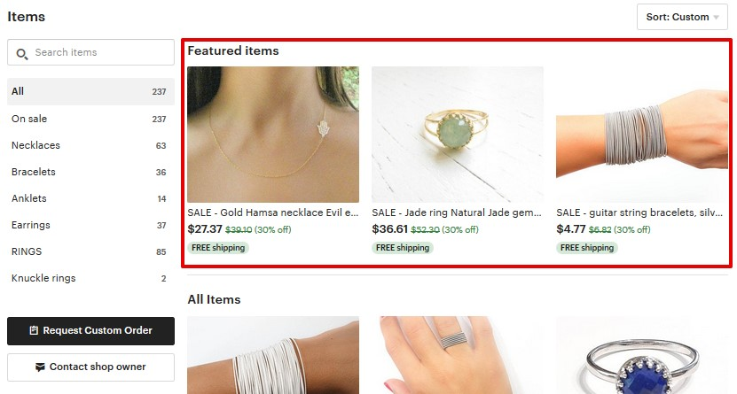
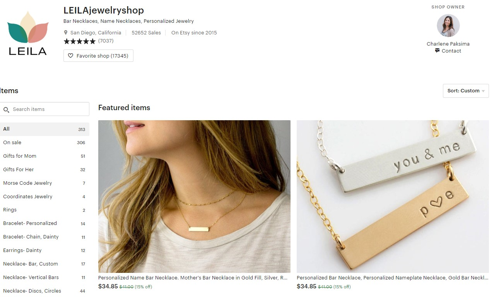
покупателя. Этси предлагают разместить здесь самые популярные листинги, с
максимальным числом просмотров и фаворитов.
У магазинов с подпиской Etsy Plus этот раздел выглядит более заметно (как на
скриншоте ниже).
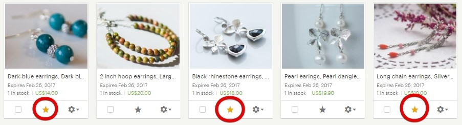
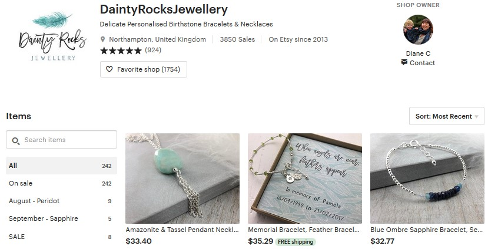
Какие листинги разместить – решать нам, продавцам. Можно периодически их
менять, чтобы внешний вид магазина всегда имел какую-то изюминку и посто-
янным посетителям было видно, что магазин живой, в нём есть активность.
В то же время вы можете не использовать этот раздел – в этом случае после
информации о магазине сразу пойдёт список обычных листингов.
Чтобы поместить товар в категорию Featured items, нужно зайти в меню Shop
Manager – Listings. А затем выбрать 3-4 листинга и нажать звездочку на каждом
из них.
Вы можете выбрать и больше листингов, например, 6 или 10. Те листинги, ко-
торые будут проданы, пропадут из категории Featured items и будут заменены
следующими по очереди.
Чтобы установить порядок показа листингов, нужно перейти в управление по-
пулярными листингами в колонке справа, нажав на ссылку Manage.

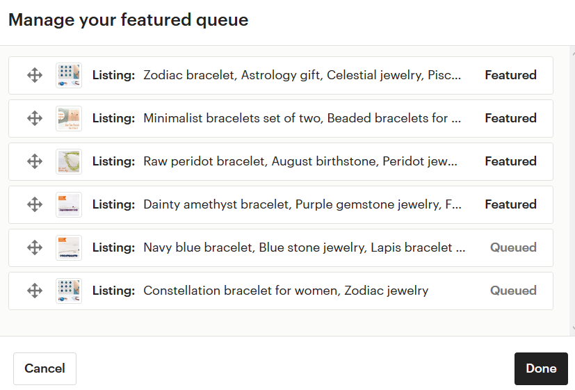
И перетащить вверх те листинги, которые должны отображаться в текущий мо-
мент (Featured), а внизу оставить запасные (Queued).
Как добавить в магазин секции
Секции – это группы листингов, которые объединены в общий раздел по ка-
кому-то признаку. В магазине они выглядят вот так.
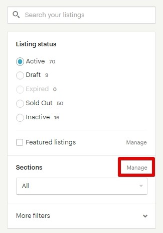
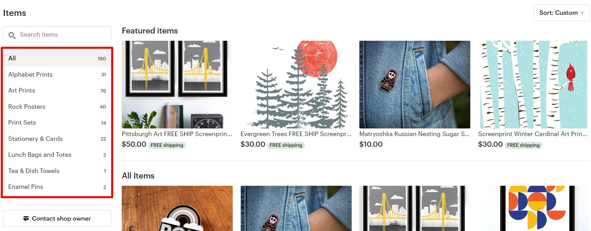
Чтобы добавить секции или внести в них изменения, нужно зайти в Shop
Manager – Listings и нажать Sections – Manage.
Чтобы добавить секцию, нажмите Add Section. Чтобы внести изменения в назва-
ние, нажмите на нужную строку и введите новое название. А чтобы поменять
секции местами, возьмите мышкой за крестик и тяните вверх или вниз.
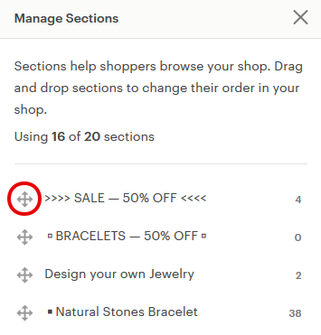
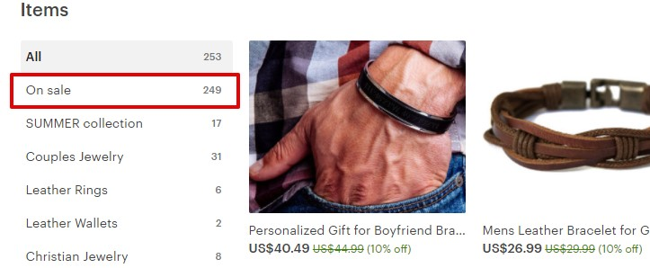
Максимальное количество секций – 20.
Секции, в которых нет товаров (стоит цифра 0), в магазине не показываются.
Если у вас есть товары на распродаже, то Etsy помещает их в дополнительную
секцию On sale. Она появляется автоматически, её никак не нужно подключать
(а также нельзя выключить).
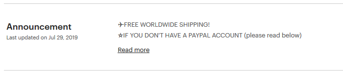
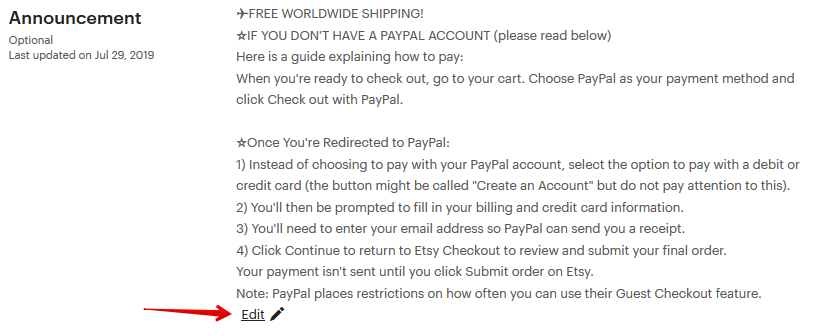
Как добавить объявление магазина (Announcement)
В разделе Announcement вы можете написать любой текст, начиная с краткой
информации о себе и заслугах магазина, заканчивая акциями или отзывами.
Данная информация видна всем посетителям магазина.
Я стараюсь отразить здесь ту информацию, которая будет полезна и интересна
покупателям. Например, код купона на скидку при покупке на определенную
сумму, предстоящие акции или что-то еще.
В самом начале Announcement можно написать что-то такое, что вызовет инте-
рес у посетителя, и он захочет развернуть объявление и прочитать его полно-
стью (Read more).
Как изменить расположение листингов в магазине
Сначала выберите пункт меню Shop Manager — Settings — Options. Выставите En-
abled в пункте Rearrange Your Shop.
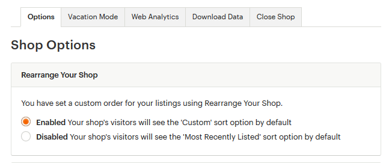
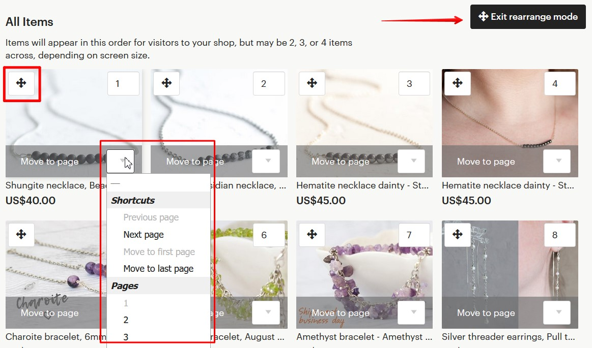
Затем нужно перейти в раздел редактирования магазина. После чего восполь-
зуйтесь кнопкой Rearrange items над листингами и создайте нужную последова-
тельность – просто меняйте листинги местами или перемещайте их на другие
страницы.
Когда «витрина» создана, завершите изменения кнопкой Exit rearrange mode.
Заданные настройки положения листингов сохраняются независимо от того,
были обновлены листинги или нет.
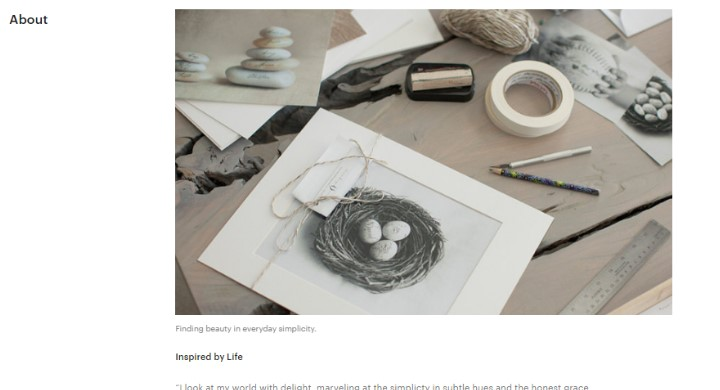
Как изменить раздел About
Администраторы Этси не раз упоминали в своих статьях, что наличие/напол-
ненность About положительным образом влияет на работу поискового алго-
ритма.
В одном из своих интервью разработчики так и сказали, что заполняя About и
Policies (о котором мы поговорим позже), вы получаете приоритет в поисковой
выдаче. Именно поэтому рекомендуем заполнить этот раздел от начала до
конца.
Как обычно, нужно перейти в режим редактирования магазина.
Фотографии и видео
У вас есть возможность загрузить 5 фотографий и 1 видео. К каждой фотогра-
фии вы можете сделать небольшую подпись и пояснить, что именно вы хотите
донести до посетителя. Рекомендую в этом разделе загружать фотографии ра-
бочего места, рабочего процесса, вас за работой. Пусть покупатель прикоснется
к таинству создания ваших изделий и заглянет в закулисье.
История
Обязательно расскажите о себе и о том, как вы пришли на Этси. О том, что вас
вдохновляет, где вы черпаете идеи для своих работ, как отдыхаете. Чем больше